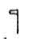
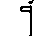
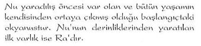

EVREN VE İNSAN
İnsanlar ölümlü Tanrılar, Tanrılar ise, ölümsüz insanlardır.
Tanrıları bilmek istiyorsan önce kendini bilmelisin...
Sırlar dünyasının kapısı işte burada açılır ve burada kapanır.
Bu kapının açık ya da kapalı olması sana bağlıdır.
Sırlar yolunun yolcusuna bu kapı apaçıktır...
Eski Mısırlılar Evren'e ''Neter-Khert" ismini vermişti. Neter-Khert, bu dünya üzerinde var olan süptil planların genel ismidir. Bu kelime aynı zamanda, "ölülerin ziyaret ettiği yer" anlamına da gelir. Neter-Khert'in bir diğer anlamı da "Büyüsel-Tanrısal Evren"dir:
Evren'e büyüsel kavramının yüklenmesi, evrende işleyen ve sadece inisiyelerce bilinen kozmik yasaların varlığından dolayı idi. Evren kendisine özgü kozmik yasalarla işlemekteydi. Bu yasalar evrenin her bir noktasında geçerli olan değişmez prensiplerdi. Dolayısıyla dünyamızda da geçerli olan yasalardı bunlar. İşte dünya üzerinde de geçerli olan bu yasaları kullanabilme çalışmaları da "Majik Çalışmalar"ın temelini oluşturmaktaydı. Bu çalışmalar o denli ileri bir boyuta ulaşmıştı ki, Mısır tam anlamıyla majik bir kültüre bürünmüştü. Majik teknikleri kullanmak son derece olağan bir iş haline gelmişti. Mısır'ın Ölüler Kitabı ile ilgili çalışmalarıyla tanınmış dünyaca ünlü araştırmacı E.A. Wallis Budge, "Neter" sözcüğünün üzerinde bir hayli durmuş ve bu sözcüğün ne anlama geldiğini ve Eski Mısırlı rahiplerce bu sözcüğe hangi anlamlar yüklendiğini farklı açılardan ele alarak ortaya çıkartmaya çalışmıştır. Budge'ye göre:
"Mısırlılar'ın Tanrı'ya ve her türdenı ruha ve herhangi bir insanüstü veya doğaüstü güce sahip olduğu ileri sürülen her türden varlığa verdikleri genel isim Neter'dir."
Evet... Tanrı ya da İlâhi Varlığın Mısır dilindeki karşılığı "Neter"dir. Ezoterizm konusunda bir başka tanınmış araştırmacı Murry Hope ise, bu isimle ilgili olarak şu tespitlerde bulunur:
"Kavramın hiyeroglif metinlerindeki kullanımıyla ilgili yoğun araştırmalar göstermektedir ki,bu kelimenin bir yaşam niteliği ya da ölümsüzlük veya yaşamı canlandırma kuvvetiyle ilgili olduğuna işaret etme yönündedir "
Dikkat edilirse Neter ile ilgili tüm açıklamalar birbirini destekleyen kavramlar üzerinde odaklanmaktadır.
(Hiyeroglifler'de Neter ve Neterler
Neter sözcüğü Mısır'da şeklinde gösterilmekteydi. Hiyeroglif yazıtlarında ise  şeklinde gösterilir. Eğer bu çoğul olarak yani Tanrılar anlamında kullanılmak istenirse veya şeklinde gösterilmiştir. Hiyeroglif yazı dilindeki Tanrı ya da Tanrısallığı ifade eden  bu şeklin Kur'an terminolojisinde ve Batıni İslâm Kültürü'nde Bir olan Tanrı'yı ifade eden Elif harfiyle olan yakın benzerliği de dikkat çekicidir.)
Kısaca özetlemek gerekirse: Mısırlılar Neter-Khert sözcüğüyle, Tanrısal bir yönetimin bulunduğu, farklı boyutlardan oluşmuş hiyerarşik işleyişin geçerli olduğu bir evren modelini dile getirmişlerdir. Ölümden sonra serbest kalan ruhsal varlıklar, bu alemlerin çeşitli safhalarına gitmektedirler. Hatta sadece ölümden sonra değil, ölmeden önce de. Mısırlı rahipler bu alemlerle irtibata girebilmekteydiler. Bu irtibat Mısır İnisiyasyonu'nun en temel hedeflerinin başında gelmekteydi. Nitekim Thot'un Kitabı'nda Yedi Küre vizyonuyla bu konu inisiyelere ayrıntılı bir şekilde anlatılmaktaydı. Az sonra ayrıntılarıyla göreceğimiz gibi Mısır'ın Ölüler Kitabı'nın muhtelif bölümlerinde de bu tema pekçok kez tekrarlanarak anlatılır:
Neter-Khert'te Mısırlı rahipler tarafından ziyaret edilen pekçok bölge vardı. Mısır İnisiyasyonu'nun en derin sırlarından birini oluşturan Neter-Khert'i oluşturan bu bölgelerin Mısırlılarca nasıl tanımlandığını ve bu tanımlamanın ezoterik bilgilerde ne anlama geldiğini önce kısaca özetlemeye çalışalım. Daha sonra bunların ayrıntılarını tekrar ele alacağız:
1- MAATİ SALONU: Kişinin geçmiş söz ve davranışlarmın gözden geçirildiği yer. Bu dünya ile öte alem (Spatyom) arasmdaki tampon bölgedir.
2-ARİTLER: Arit kelimesi "Kabul Salonu" demektir. Ruhun öldükten sonra ilerlediği yedi kabul salonu vardır. Bunlar aynı zamanda bedeninden ayrılmış olan varlığın geçip bitirmiş olduğu safhaları temsil eder.
3-TUAT: Oniki kısma ayrılır. Tuat kelimesi "Astral Mekân" (Spatyom) anlamına gelir.
4- OSİRİS'İN EVİ: Yirmibir Pilon'a ayrılır. Pilonlar sübtil dünyadaki farklı safhalardır. Spatyom'un üst merhalelerini ve Ruhsal İdareci Planları ifade eder.
5- AATLAR: Onbeş tane aat vardır. Kelime olarak "Bölümler" anlamına gelir. Aynı zamanda geçirilen şuur halleridir.
6- SEKHET-HETEP: "Barış ve Beslenme Tarlası"dır. Dört ana bölüme ayrılır. Ruhun ulaşacağı en üst düzeydeki planın adıdır. İşte tüm bu planları da Tanrılar yönetmekteydi...
Klasik Mitoloji kitaplarından herhangi birisini açtığınızda, tıpkı Antik Yunan'ın Olimpos Tanrıları gibi Mısır Mitolojisi'nde de bir "Tanrılar Birliği"nin bulunduğunu; insanların da bu Tanrılar'a tapmakta olduklarının yazılı olduğunu görürsünüz. Ancak bu tespitte eksik olan birçok noktalar vardır. Çünkü eski uygarlıkların mitolojilerinde olduğu gibi Antik Mısır Kültürü'nün ve özellikle de Mısır İnisiyasyonu'nun bir yansıması olan bu mitolojik Tanrı sembollerinin tümü, sembolik bir anlama sahiptir. İşte eksik olan da budur. "Tanrılar Birliği"nin ne anlama geldiği anlaşılamadıgı için bu basit bir putperest inancı olarak yorumlanmıştır. Mısır Mitolojisi'nde karşımıza çıkan "Tanrılar Hiyerarşisi", tıpkı Yunan'ın Olimpos Tanrılar Hiyerarşisi'nde olduğu gibi "Evrensel İdare Mekanizması"mn sembollerle ifadesinden başka bir şey değildir.
Mısır Mitolojisi'nde Ra tarafından yönetilen bir Tannlar Birliği vardır. Bu birliğe ilâhlar birliği de denebilir. Mısır inisiyatik anlayışına göre: "İnsanlar ölümlü Tanrılar, Tanrılar ise ölümsüz insanlardır." Bu söz, o dönemlerde yaşayan bir Mısırlı'nın düşünce sistemini anlayabilmek için çok önemli bir ipucudur. Antik Mısır Kültürü'nün bu düşünce sistemini daha iyi kavrayabilmek için, "Tanrılar - İhâhlar'" ve "İnsanlar" meselesini ve bu isimlere yüklenen anlamlan ezoterik bakış açısı altında ele almak gerekir. Önce İnsanlardan başlayalım...
İNSANLAR
Mısır'ın Thot Öğretisi'ne göre insanlar dört ayrı grupta değerlendirilmekteydi.
"Ölümlü Otomatlar": Özel eğitimden geçirilmemiş, yaşamı içgüdüleri ile algılayan kapalı şuurlu, otomatizmaya bağlı yaşayan insanların oluşturduğu ilk gruptur. Bu gruptakiler her türlü spiritüelliğekapalıdırlar.
"Ölümlüler": Eğitilmiş olmakla birlikte henüz içsel görüş kazanamamış olanlar. Bu gruptaki varlıklar spiritüel şeylere inanmakla birlikte sadece inanç varlıklarıdır. İnançlarını kuvvetlendirmek için mucize ve alametlere ihtiyaç duyarlar.
"Uyanmış Bilinçler": İnisiyasyondan geçmiş, içsel görüş kazanmış, kabuklarını kırmış yani uyanmış insanların aşamasıdır. Bu gruptaki insanlar evrendeki diğer yaşam biçimleri ile uyumlu bir hale gelmiş olanlardır.
"Işık Varlıklar": Işıkla bir olmuş olanlar. Bu grupla ilgili ayrıntılı bilgi verilmemiştir. İnisiyasyonun son aşamasma ulaşabilenlerin safhasıdır.
"Ölümlüler", "Uyanmış Bilinçler" ve "İşıklı Varlıklar" aynı zamanda üç aşamalı Mısır İnisiyasyonu'nun aşamalarına da karşılık gelmekteydi.
TANRILAR – İLAHLAR
Eski Mısır Mitolojisi'nde karşımıza çıkan Tanrılar sözcüğünün altında birden fazla anlam gizlidir. Mısır Mitolojisi'nin Tanrılar Birliği'ni oluşturan ve Tanrılar olarak ifade edilen semboller, başlıca beş farklı anlama sahiptir:
1- Mısır Mitolojisini oluşturan Tanrılar Birliği öncelikle "Evrensel İdare Mekanizması"nın hiyerarşik yapısını ifade eder.
2- Bu Tanrılar Birliği içinde Siriusyen Kültürü ya da bizzat "Siriusyen Kültür Temsilcileri"ni sembolize eden ileri seviyeli "Galaktlk Varlıklar" da bulunmaktadır. Mısır Mito lojisi'ndeki Anubis, Şu, Tefnut gibi Tanrılar bu tür varlıkların sembolleridir. Bunlar da Evrensel İdare Mekanizması içinde değerlendirilebilirler çünkü "Evrensel İdare Mekanizması"nı oluşturan unsurlarındandır. Ama yine de bunlar Ezoterizm'de ayrı bir bölüm içinde değerlendirilmektedir.
3- Bazı Tanrı isimlerinin üçüncü bir anlamı ise Kozmik işleyişi yöneten "Evrensel Yasalar"la ilgilidir. Tanrılar Birliği içindeki bazı Tanrı isimleri Evrensel - Kozmik Yasaları ifade eder.
4- Mısır Mitolojisi'ndeki bir diğer grup Tanrısal Varlıklar ise doğrudan Mu ile bağlantılı Atlantisli rahiplerdir. Bunlar da Mısır Mitolojisi'nde Tanrılar olarak nitelendirilmiştir. Burada tekrar belirtelim ki, bunlara Tanrı ismini Klasik Mitoloji araştırmacıları takmıştır. Mısırlılar'a göre bunlar İlâhi Varlıklar'dı. (Osiris, Thot, gibi...)
5- Bazı ezoterik bilgileri aktarmak için kullanılan sembollerdir. Bu grup içinde kullanılan sembollerle, dünyamızda meydana gelen fiziksel ve ruhsal değişimlerle ilgili meseleler anlatılır. Çoğunlukla bir olgu ya da bir uygarlığı anlatmak için kullanılmıştır.
Yukarıda maddeler halinde özetlediğimiz bazı Tanrı sembolleri bazen kullanıldıkları yere göre birden fazla da anlama sahip olabilmektedir. Yani aynı isim birden farklı anlamlarda da kullanılmıştır. Aynı durum diğer semboller için de geçerlidir. Bu, mitolojik anlatımın bir özelliğidir. Sırlar kat kat birbiri içine bohçalanarak saklandığı için, tek bir sembolle, birden fazla anlam iç içe bohçalanmış durumdadır. Buna bir örnek vermek gerekirse Osiris'i gösterebiliriz. Osiris hem birinci, hem de dördüncü gruptaki Tanrılar sembolizmine ait niteliklere sahiptir. Yani bazen biri, bazen ise diğeri mitlojik bir unsur olarak kullanılmıştır. Hangisinin nerede kullanıldığını anlayabilmek için kullanılış şekline bakmak yeterlidir.
Evet... Artık Mısır Kozmogonisi'ni oluşturan Tanrılar sembollerini bilinen ve bilinmeyen yönleriyle teker teker ele almaya başlayabiliriz. (Parantez içindeki numaralar, o Tanrı Sembolü'nün hangi gruba ait olduğunu göstermektedir.)
Nu (I ,3,5)
Tanrı Nu tüm tezahürlerin babasıdır. Tüm hayatın tohumlarını barındıran denizdir.
Ra-Atum (1 ,3,5)
Osiris, İsis, Neftis ve Set'in babasıdır. Ra'nın sembolü daire ve güneştir. Doğmamış haldeki ya da batan güneş ise Atum adını alır.
Tem (1 ,3, 5)
En yaşlı Tanrılar'dandır. Batan güneş olarak ifade edilen yaratıcı bir Tanrı'dır. Kuzey ve Güney Tacı'nı giyen kral olarak gösterilir.
Nu, Ra,Tem (5)
Mısır Mitolojisi'nde Nu, Ra ve Tem'in birlikte ele alındığı bir bölüm vardır. Bu Mitolojik anlatımda söz konusu Tanrılar sadece 5. Grup'taki anlamlarıyla karşımıza çıkmaktadır. Eski bir Mısır yaradılış efsanesine göre:

Ancak hemen belirtelim ki, bu yoktan varoluşu ifade eden ilk başlangıç değildir. Bizim devremizin başlangıcıdır. Yani "Demir Çağı"nın başlangıcı...
Burada Tanrı Nu olarak ifade edilen sembol. Mu Uygarlığı'na karşılık gelmektedir. Mu ile ilgili bilgilerin kayıtlı olduğu tüm eski yazıtlarda, insanlığın ilk ana vatanının Mu olduğu açık bir şekilde dile getirilmiştir. Mu'nun sulara gömülmüş olmasından dolayı, Mu'nun sembollerinden biri de denizdir. Mısır Kozmogonisi'nde Nu'dan, "tüm hayatın tohumlarım barındıran denizdir" diye sözedilmesinin nedeni de budur. Ayrıca "Nu" sözcüğü ile "Mu" sözcüğünün benzerliğine de dikkatlerinizi çekmek isterim. Buradaki suyla ilgili anlatımlar, farklı toplumların kutsal kitaplarında da geçer. Örneğin Tekvin Bölümü'nde dünyanm yaradılışıyla ilgili ilk satırlar şöyle başlar:
Başlangıçta Allah gökleri ve yeri yarattı. Ve yer ıssız ve boştu; ve enginin yüzü üzerinde karanlık vardı; ve Allah'ın Ruhu suların yüzü üzerinde hareket ediyordu. (Tekvin Bap 1/1-2)
Kutsal kitapları bilimsel bulgularla karşılaştıran birçok araştımıacı, dünyanın yaradılışı ile ilgili olduğu varsayılan bu metinlerde geçen suların ne anlama geldiğini bir türlü bulamadıkları için, evrenin bu başlangıç aşamasında bir gaz kütlesi ile dolu olduğunu ve orda suyun bulunduğunu söylemenin tamamen bir hata olduğunu ileri sürmüşlerdir. Burada hesaba katılmayan mesele söz konusu metinlerde anlatılan başlangıcın hangi başlangıç olduğudur. Burada dile getirilen başlangıç dünyanın ilk varoluşu değil, dünyanın Tufan sonrası yeni bir çağa geçtiği dönemdir. Ve burada geçen sular kavramı mecazi değil, reel bir kavramdır. Bilinen anlamıyla dünya üzerindeki birçok bölgenin Tufan sırasında sular altında kalmasını anlatmaktadır. Kaldığımız yerden devam edelim...
Efsanenin ayrıntılarında da bu konuyla ilgili hayli önemli ipuçları bulunmaktadır.
Efsaneye göre:
İsyan eden bu halk hakkında efsanede başka bir bilgi ya da ipucu verilmez. Bu da, efsanede sözü edilen halkın bizim devremize ait bir halk olmadığı fikrini destekler. Bu efsanede anlatılanlar, Mu Uygarlığı'nın varlığını sürdürdüğü dönemlerde hayli ileri düzeyde bir kültürün dünyaya hakim olduğundan söz eden ezoterik bilgi ve kayıtlarla büyük bir paralellik gösterir. "Nu"dan sonra "Ra" yönetimi ile anlatılmak istenen "Atlantis Dönemi"dir Gerçekten de Atlantis'in ilk dönemlerinde Mu Kültürü'nün hakim olduğu hayli ileri düzeyde bir yaşam düzeyinin mevcut olduğunu, ancak zaman ilerledikçe bu kültürün dejenere olmaya başladığını biliyoruz. Efsanede bu husus, mitolojik bir üslupla sembolik olarak anlatılmıştır. Efsanedeki bu mitolojik anlatım üslubu içindeki sembolleri alt alta maddeler halinde sıralayalım:
"Ra'nın genç ve şevkli olduğu günler": Atlantis'in ilk dönemleridir.
"Barış sever yönetim": Atlantis'teki Altın Çag'ı anlatır. Ancak zamanla bu gidiş negatif anlamda bir iniş göstermiştir. Atlantis'in son dönemlerine doğru çıkan pozitif negatif çatışması en sonunda ciddi bir savaşa dönüşmüştür ki, efsanede bu durum, açıkça şu satırlarla belirtilmiştir: "Ancak yaşı ilerledikçe kendisine bağlı olanlar onun zayıfladığını hissedip ona başkaldırarak isyan etmişlerdir." Efsane bu isyandan sonrasını özetle şöyle anlatır:
Güneşin gözünün insanlara intikam için yönelmesi, başlı başına kozmik bir felâketin göstergesidir. Dünyamızda meydana gelen ve bizim devremizin başlangıcını oluşturan Tufan, bu yönelmenin sonunda gerçekleşmiş olmalıdır. Efsane bizim devremizin başlangıcını ise şöyle anlatır:

Daha önce aynı sembolün birden farklı anlamlarda kullanılmış olduğundan söz etmiştik. Burada bunun açık bir örneğiyle karşılaşmaktayız. Ra'nın daha önce Atlantis Kültürü'nü sembolize ettiğinden söz etmiştik. Burada da yine aynı şekilde Atlantis'teki bilgeliğin sembolü olarak kullanılmıştır. Ra'nın "insanlardan intikam alması" ve "evrenin ötelerine gizlenmesi" dünya üzerinde yaşayan insanların bilgelikten uzaklaşmaya başlayacağını anlatmaktadır. Bu da, başlayan bizim devremize ait insanların bilgiden mahrum yaşayacaklarının açık bir sembolüdür. Efsanenin bu bölümünde Demir Çağ'ın başlangıcı anlatılmaktadır.
Demek ki önceden Doğu'dan Batı'ya hareket etmiyordu. Bu da dünyanın kutupsal bir değişime maruz kaldığını göstermektedir. "Yeni düzen" tanımlamasıyla Tufan'dan sonra başlayan bizim devremize ait süreç anlatılmaktadır "Tanrıça Nut" sembolü ise Kur'an-ı Kerim'de geçen "Nuh Tufanı"na karşılık gelir. İlk başta son derece basit bir efsane gibi görülen bu anlatımlarda gördüğünüz gibi, Dünya'nın ezoterik geçmişi ile ilgili pek çok sır, perdeli bir şekilde Tanrılar ve Tanrıçalar sembolleri kullanılarak anlatılmış durumdadır.
Şu ve Tefnut (2,3)
"Şu": Ra ve Hathor'un oğlu, Tefnut'un ikiz kardeşidir. Gökyüzünü yani Nuit'i kaldırdı ve topraktan yani Seb'den ayırdı. Elinde tüy olan ya da iki tüylü başlığı olan insan şeklinde gösterilir.
"Tefnut": Ra ve Hathor'un kızı, Şu'nun ikizidir. Nemdir, aynı zamanda güneş ışığının yaratıcı gücüdür. Aslan başlı insan şeklinde gösterilir. Başının üstünde bir disk vardır. Firavunlar döneminde astrolojik çağ olarak ikizlerin egemenliği söz konusuydu. Mısır'da ikizler Şu ve Tefnut isimli mitolojik Tanrılar'la semboUeştirilmişti. Mısır Mitolojisi'ne göre İkizlerin görevleri, göklerle yeryüzünü birbirlerinden ayırmak. Mısır'ın Ölüler Kitabı'nda ikiz aslan Tanrılar olarak tanımlanmışlardır.
Bu mitolojik sembolizmin anlamı son derece açıktır. İkizler öncelikle düaliteyi yani ikiliği sembolize eder. Bu Tanrılar'in göklerle yeryüzünü ayınnası ise, insanların göksel-semavi irtibatlarını yavaş yavaş kaybetmeye başlayacakları anlamına gelir. İçine girdiğimiz "Demir Çağ"ın bir anlatımıdır. Ancak bu irtibat eskisi gibi yani Mu'da olduğu gibi açık ve kuvvetli bir şekilde olmasa da yine de belirli bir oranda Mısır'da devam ettiğini Tefnut'un Aslan Başlı ancak insan şeklinde gösterilen sembolünden anlayabiliyoruz. Bu sembol söz konusu göksel irtibatın adresini de bize verir. Bu adresin merkezi Siriusyen Kültür'dür. Çünkü daha önce de değinmiş olduğumuz gibi hem Ezoterizm'de hem de Mitolojiler'de Sirius'un sembollerinden biri de Aslan'dır.
Hathor( 1,2,4)
Bir Gökyüzü Tanrıçasıydı. Çok eski dönemlerde Ra'mn kızı olarak nitelendirilmişti. Sonraları Horus'un eşi Het Heru olarak isimlendirildi. Het Heru "Horus'un Evi" anlamına gelen bir isimdir. Bu eski dönemlerin Gökyüzü Tanrıçası genellikle başında bir disk ve bonuzları olan bir kadın olarak gösterilirdi. Horusla olan ilintisi, Siriusyen Kültür'le olan bağlantısını göstermektedir. Başının üzerindeki yılan sembolü de bunu desteklemektedir.
Hor- Horus (1 , 2)
Horus ismi Eski Mısır'da "Hor" olarak anılmaktaydı. Horus Eski Yunanca'daki karşılığıdır. Ezoterik Öğretiler'de Dünya Rabbi'nin sembolüdür. Horus'un bilinen en yaygın sembollerinden biri Ra'nın sol gözü olarak ifade edilen göz şeklindeki amblemidir. Dünyayı görüp gözeten ve "Evrensel İdare Mekaniztnası"nın bir unsuru olan "Siriusyen Kültür"ün dünyayı görüp gözeten ve kontrol eden keskin gözünün sembolüdür.
Mitolojik anlatımlarda genellikle şahin ya da şahin başlı insan görünümünde sembolleştirilmiştir. Yolculuğu simgeleyen bir kayık içinde ve başının üstünde bir yıldız amblemi ile temsil edilen şekli en yaygın olanıdır. Yolculuktan kasıt kozmik irtibat ya da bir başka değişle kozmik tesirlerin dünyamıza gelişidir. Kozmik tesirlerden kastedilenin ne olduğu, şahin başlı insan vücutlu Horus sembolünün üstündeki yıldız ambleminde gizlidir.
Horus ve Seth'in Mücadelesi (1, 2, 3)
Mısır Mitolojisi'nde negatif güçlerin ve şeytani - negatif enerjilerin sembolü olan Seth, Horus ile sürekli bir savaş içindedir. Bu, evrendeki pozitif ve negatif güçlerin sembolü olduğu gibi; bu savaş aynı zamanda vicdanın nefsaniyetle olan mücadelesidir. Bu pozitif ve negatif enerjilerin dünya üzerine de çok büyük etkileri vardır. (-3-) Hatta Atlantis'te başlayıp daha sonraları bizim kıtalarımızda birbirleriyle mücadelelerini süren Agarta ile Şambala'nın beslendikleri ana kaynak da, Horus ile Seth'in temsil ettikleri kozmik planlardır. Agarta ve Şambala, bu planlardan aldıkları enerjileri dünyaya yansıtan birer paratoner işlevi görmüşlerdir. Bu işlevleri bugün de sürmektedir. (-1-) Antik Mısır Metinleri'nde Horus'un akla gelebilecek her türlü şeytani silahı kullanan Seth ile mücadelesi, menfiliğe ve karanlığa karşı savaşan ışığın; ışık güçlerinin mücadelesi olarak anlatılır. Işık Güçleri, Şahin başlı Horus sembolünün üstündeki Sirius'u ifade eden bir yıldızla gösterilmiştir. Ve Eski Mısır Kültürü'ne ait pek çok ezoterik metinde de Horus, Dünya'ya Sirius'tan gelen tesirlerin kaynağı olarak tanımlanmıştır. (-2-) Horus'un karşıt kutbu Seth, Mısır Mitolojisi'nde Osiris'in kardeşi ve katili, Neftis'in kocası ve Ra'nın oğlu olarak tanımlanır. Mısır Ezoterizmi'nde Seth, Kur'an-ı Kerim tenninoloji-sinde geçen Şeytan sembolüne karşılık gelir. Seth ile ilgili Mitolojik anlatımlar bu yorumumuzu tam anlamıyla desteklemektedir. Mısır Mitolojisi Seth'i Horus'la güçleri denktir diye tanımlar ve hemen arkasından şöyle bir açıklama yapar. Özetle aktarıyorum:
Sırtlana benzeyen (ama hangi hayvan olduğu tam olarak anlaşılamayan) bir hayvan şeklinde resmedilen Seth ile İlgili anlatılanlar, görmüş olduğunuz gibi Kur'an-ı Kerim terminolojisinde Şeytan'la ilgili anlatılanlara tıpa tıp uymaktadır. Kur'an-ı Kerim'de de Şeytan'in bir melek olduğu ancak ancak daha sonra Rabbi'ne isyan ettiği için insanları negatif alana yönlendirmek için çalışmaya başladığı anlatılır. İşlenen tema aynıdır. Çünkü anlatılmak istenen bilgi aynıdır. Bu bilgi de Seylan'ın negatif enerji üreten ve bunu insanlığa yansıtan ruhsal bir plan olduğudur... Dini terminolojideki adı Şeytan, Mısır Mitolojisi'ndeki ismi ise Seth'tir. İsimler bile birbirine ne kadar çok benziyor, öyle değil mi?... Tabii Satanizm isminin benzerliğini de ayrıca vurgulamak gerekir.
Anubis (1)
Mısır yazıtlarında Köpek başlı insan olarak sembolleştirilmiştir. Mısır Mitolojisi onu Tuat'ın rehberi ve Neter-Khert'te koruyuculuk fonksiyonu gören bir Tanrı olarak tanımlar. Osiris ve Neftis'in oğlu, Horus'un üvey kardeşidir. Horus'un üvey kardeşi olarak nitelendirilmesi de son derece manidardır. Burada ince bir nüansla çok önemli bir bilgi anlatılmak istenmiştir. Üvey kardeş değil de kardeş denseydi sembolde anlatılmak istenen bilgi çok farklı olurdu. Kısaca bunu açalım...
Horus, Siriusyen Kültür'e ait bir varlığı sembolize ettiğine göre, kardeşi denseydi, bu plana ait bir başka varlık ya da bu plana benzer bir başka ruhsal planın burada kastedilmiş olabileceğini düşünürdük. Ama üvey kardeş denmiştir. Yani yine aynı vazifeyle görevli Horus'un temsil ettiği plana karşı sorumlu olan, bir alt kademedeki plan burada kastedilmektedir.
Peki bu sistemin kimliği belli midir? Evet... Ezoterizm'de bunun cevabı mevcuttur.
Bu sistemin kimliği Anubis'in şekilsel sembolünde gizlidir. Anubis'in tüm Mısır yazılı metinlerinde dik kulaklı köpek kafasına sahip bir insan şeklinde sembolleştirilmiş olması önemli bir anlamı vardır. Yani rast gele seçilmiş bir hayvan değildir. Aynen Eski Türk Gelenekleri'nin en önemli sembollerinden biri olan Kurt'da olduğu gibi...
Dik kulaklı bir köpek kafası ya da Kurt Büyük Köpek Takım Yıldızı'nın bir üyesi olan Sirius Yıldız Sistemi ile ilintilidir. Türkler'in Kültür Kökenleri isimli son kitabımda ayrıntıarıyla açıklamış olduğum gibi, Eski Türk Mitolojisi'nin en özgün ve en önemli sembolü Kurt'tur. Ezoterizm'de Kurt ya da dik kulaklı köpek Sirius Yıldız Sistemi'nin sembolüdür. Ancak burada bir başka ayrıntıya daha dikkat etmemiz gerekmektedir. Mısır hiyerogliflerinde resmedilen Anubis'in başı köpek, vücudu ise insan olarak çizilmiştir. Yani sadece köpek ya da sadece insan değil, ikisinin karışımıdır. Bu sembolik özelliği, mitolojide sözü edilen Horus'un üvey kardeşi olmasıyla da büyük bir paralellik gösterir. Tüm bu inceliklere dikkat ederek konuyu tek bir cümleyle özetleyecek olursak, şunları söyleyebiliriz: Anubus Sirius Kültürü İle dolaylı olarak bağlantılı dünya spatyomunda bedensiz varlıklara yardımcı olan vazifeli bir varlıktır. Metapsişik araştırmacıların rehber varlıklar olarak isimlendirdiği türden bir varlıktır. Ya da bu tür vazifeli varlıkların genel ismidir. Mısır Mitolojisi'nde ölülerin kalbini tartması da, bu yorumumuzu desteklemektedir.
Osiris (1,4)
Ölüler Tanrısı'dır Seb ve Nuit'in oğludur. İsis, Neüis ve Set'in kardeşidir Mısır Mitolojisi'ne göre: Başlangıçta Osiris "Doğa Tanrısı"ydı. Kardeşi Set tarafından öldürüldükten ve Thot'un sihirli asası yardımıyla karısı İsis tarafından tekrar canlandırıldıktan sonra "Ölüler Tanrısı" olmuştur Adı "reenkarne olan" demektir. Evet Mısır Mitolojisi'nde Osiris bu şekilde tanımlanır. Ancak buradaki "Ölüler Tanrısı" tanımlaması bilinen ölüm olayıyla ilgili değildir. Mısır Ezoterismi'nde ölü inisiyeyi sembolize eden Bu sembolik bilgi dikkate alındığında Osiris'in İnisiyeler'in başı olduğu anlamı çıkar Yani Mısır İnisiyasyonu'nun lideridir Bu liderin kimliğini daha önce açıklamıştık. Aynı zamanda Evrensel İdare Mekanizması'nin ruhsal planlarından, vahiy mekanizmasıyla ilgili vazifeli planın da sembolüdür. Bu açıklamalarımızdan da anlaşılacağı üzere, Osiris hem birinci heın de dördüncü gruba ait sembolik anlamlara sahiptir.
İsis (1,4)
Osiris'in karısı ve kardeşi, Horus'un annesidir. "Güç Sözlerinin Efendisi" ve "Doğa Tanrıçası"dır. Başında tahta benzeyen başlığı olan kadınla gösterildiği gibi bazen de başmda güneş kursu ve boynuzlu başlığı olan bir kadın şeklinde de ifade edilmiştir. Ve heykel ya da resimlerinin çoğunda alnını çevreleyen bir yılan vardır. Mısır İnisiyasyonu'nda çok önemli bir yere sahip olan kabinelerin sembolüdür. "Güç Sözler'in Efendisi" tanımlamasıyla Mısır Mitolojisi bunun ipucunu vermektedir Aynı zamanda Osiris'te olduğu gibi. Evrensel İdare Mekanizması'nın vazifeli planlanndan da birinin sembolü konumundadır. Yani hem birinci hem de dördüncü gruba ait bir semboldür.
Thot (4)
Mısır Mitolojisi'ne göre "Bilgelik Tanrısıdır. Genellikle balıkçıl başlı insan olarak gösterilir. Maat'ın kocasıdır-. Thot, "Osiris'in Doğruyu Söyleyeni "dır. İnsanların dünyada söylediği tüm sözleri ve yaptığı her işi kaydeder ve sonuçları Osiris'e bildirir. Birçok eski kayıt Thot'tan Mısır topraklarına Yengeç Zodyak Çağı'nda gelen bir yabancı olarak söz eder. Bu son derece önemli bir tanımlamadır. Çünkü Yengeç Zodyak Çağı Atlantis'in batışından sonraki ilk çağdır. Eski Mısır kayıtları arasında önemli bir yere sahip olan Piramit metinlerinde Thot'un "Tanrısal Konuşma Bilgisi'ne sahip olduğunu söyler. Yine aynı metinlerde sanat ve bilimlerin kurucusu olduğu, sesinin çok güçlü bir etkiye sahip olduğu anlatılırken, ondan "Tanrıların Yazıcısı" olarak bahsedilir. Bu mitolojik anlatımlarda geçen üç tanımlama Thot'un ezoterik kimliğini açık olarak olmasa da, üstü örtülü bir şekilde dile getirir. "Bilgelik Tanrısı", "Osiris'in Doğruyu Söyleyeni", "Tanrısal Konulma Bilgisine Sahip Olmak" ve "Tanrılar'ın Yazıcısı" Thot'un, kökeni Mu'ya ait olan öğretiyi Atlantis'ten getiren bir rahip olduğunu göz önüne alarak yukarıdaki tanımlamaları değerlendirecek olursak, her şey çok daha anlaşılır bir hale gelecektir...
Bu tanımlamaların ne anlama geldiğini kısaca maddeler halinde sıralayalım:
"Bilgelik Tanrısı": Önde gelen inisiyatörlerden biri olduğunu gösterir. Bir sonraki tanımlama bu inisiyasyonun ismini açıkça ortaya koymaktadır. "Osiris'in Doğruyu Söyleyeni"
"Tanrısal Konuşma Bilgisine Sahip Olmak": Mısır'da Tanrılar'la birlikte yaşanan dönemler ve Tanrısal konuşma lisanı tanımlamalarına sıklıkla rastlanır. Bu ifadelerde kastedilen dönem Mu Uygarlığı'nın dünya üzerinde varolduğu süreç, Tanrısal Lisan ise Mu'da konuşulan dildir. Bu konuyla ilgili tarihi kayıtlarımıza geçmiş satırlar da bulunmaktadır. Bu kayıtlar ünlü Tarihçi Herodot'a aittir. Herodot'un Mısır'daki seyahati sırasında Teb Rahipleri ona 341 dev heykel göstermişler ve bunların 11.340 yıllık Mısır Tarihi içinde dikildiklerini söylemişlerdi. Teb Rahipleri'nin bu konuda anlattıkları arasında ilginç bir cümle geçmektedir (Herodot bu cümleyi Tarih Kitabı'na olduğu gibi almıştır.) Teb Rahipleri bu heykellerin kendi geçmiş nesillerine ait olduklarını ancak bu heykellerin yapımından önce Tanrılar'ın insanlar arasında yaşadıklarını söylemişlerdi.
Gelelim son tanımlamaya...
"Tanrılar'ın Yazıcısı": Thot'un Atlantis'te Osiris Öğretisı adı altında yaşamakla olan Mu Bilgeliğini Mısır'a geliren bir rahip olduğunu ve bu öğretiye ait sırlan kendi adıyla anılan bir kitapta (Thot'un Kitabı) yazmış olduğunu dikkate aldığımızda mitolojik anlatımlarda geçen "Tanrılar Katibi" tanımlamasının ne anlama geldiği sanınm tüm açıklığıyla ortaya çıkmaktadır.
Thot'un Asası
Thot'un Asası da başlı başına üzerinde durulması gereken önemli sembolik unsurlara sahiptir. Mu'dan Atlantis yoluyla çevre kıtalara taşman sembollerden biridir. Yunanistan'da,Mezopotamya'da, Hindistan'da arkeolojik kazılarda sıklıkla karşımıza çıkmış olan bir semboldür. Yılan sembolünün "Yılan Oğulları" ya da "Tanrı Oğulları" olarak ifade edilen "Galaktik Uygarlığın" sembolü olduğunu biliyoruz. Bir eksen üzerine spiral bir tarzda dolanan iki yılan bu Galaktik Uygarlığın adresini göstermektedir.
Şeklimizde görmüş olduğunuz birbirine sarılmış iki yılan Sirius A ve Sirius B yıldızlarının karşılıklı olarak çizdikleri yörüngelerinin sembolüdür. Asa'nın üst noktasındaki kanatlar da daha önce söylemiş olduğumuz gibi Sirius Yıldızı'nın sembolüdür. Böylelikle yılan ve kartal bir arada kullanılarak birbirlerini destekleyen bir özellik sergilemektedirler. Böylelikle her iki sembol birbirlerini desteklemiş olmaktadır.
Ptah (1)
Hayat'ın Efendisi'dir, Mısır Mitolojisi'nin en eski Tanrılarındandır. Yaratıcıdır ve insan bedeni yarattıklarından bir tanesidir. Sakallı, başı kel ve sargılarının arasından ellerini çıkarmış bir vaziyette gösterilir. Elindeki asası diğer asalara göre daha farklıdır. Gizli Sırlar Öğretisi isimli kitabımda ayrıntılarıyla açıklamış olduğum gibi, dünya üzerinde yaşamlarını sürdürecek ilk insan bedenleri (ademleri) Galaktik Uygarlıklar'ca oluşturulduğundan bahsetmiştim. Ptah, işte dünya üzerinde ilk insanların bedenlerini oluşturan Galaktik Uygarlıklara ait varlıkların sembolüdür.
Maat(l ,3)

Thot'un karısı, Ra'nın kızıdır Kanun ve adaleti temsil eder. Başında tüylü başlığı olan kadın şeklinde gösterilir. Mısır Metinleri'nde geçtiği yere göre farklılık gösteren, Maat'ın üç ayrı anlamı vardır;
1- Öte Alemi
2- Öte Alem'de işleyen ve varlıkların yaşam planlarını yönlendiren Sebep Sonuç Yasası'nı. Bu yasa Karma Yasası olarak da isimlendirilmektedir.
3- Öte Alem'de bedenini terketmiş olanlara rehberlik eden bedensiz vazifeli varlıkları.
Nuit (1)
Osiris, İsis, Neftis ve Set'in annesidir. Nuit ebedi annedir. Genellikle dünya üzerine eğilmiş bir vaziyette gösterilir Bedeni yıldızlarla süslenmiş olarak resmedilmesi, Nuit Tanrıçası'nın semavi-kozmik tesirlerin sembolü olduğunu göstermektedir. Nuit'in kızı olarak tanımlanan Neftis de göksel-semavi tesirleri alıp bir paratoner gibi dünyada çevresine yansıtan varlıkları sembolize etmektedir. Üzerinde "Evin Hanımı" hiyeroglifi olan bir başlık takan kadınla gösterilmesi bu yüzdendir.
Neb-er-tçer (3)
Klasik Mısır Mitolojisi'nde Osiris'le eşdeğer tutulmuştur. "Zamanın Efendisi" demektir. Ezoterizm'de "Zaman Enerjisi"ne karşılık gelir.
Seb (3)
Toprak Tannsı'dır. Başında tacı olan insan şeklinde gösterilir. Ezoterizm'de "Dünya Eneıjisi"nin sembolüdür.
Khepera (3)
Dışkıböceği yada dışkıböceği başlı insan şeklinde gösterilir. Yükselen güneştir, çok yaratıcıdır. Klasik Mitoloji kitaplarında Khepera bu şekilde tanımlanır. Ancak czoterik olarak çok farklı bir anlama sahiptir. Dışkıböceği olarak ifade edilen Khepera kendini feda ederek varoluşa hizmet etmenin sembolüdür. Bu anlamı dışkıböceğinin özelliğinde gizlidir. Bilenler vardır ama bu böceğin karakteristik bir özelliğini bilmeyenler için hemen açıklayalım: Dışkıböceği yavrularına besin sağlamak için sırtına nispetle son derece yumşak olan karnını yemeleri için sırtı üstü yatarak kendisini yemeleri için yavrularına feda eden bir hayvandır. İşte bu nedenden dolayı inisiyasyonda çok önemli bir anlamı olan "kendini feda ermenin sembolü" olarak bu böcek seçilmiştir. Feda inisiyasyonun temelidir Kendi egosunu feda edebilmek her türlü duygusal zaaflardan kurtulmak demektir ki, bu astral temizliğin yapılabilmesiyle ortaya çıkabilecek bir durumdur. Mısır Mitolojisi'nde çok saygı görmesi ve çok yaratıcı olarak tanımlanmasının nedeni budur.
Mısırlılara göre insan sadece üç boyutlu maddeden oluşan bir varlık değildi. Mısırlılar'a göre nasıl ki evren sadece üç boyutlu maddelerden ibaret değilse, insan da sadece görünen fiziksel bedeninden ibaret bir varlık değil, kökeni Tanrılar'a doğru uzanan ilâhi bir varlıktı. Mısır Kültürü ile ilgili hangi kitabı açarsanız açın, insan bedeniyle ilgili Mısırlılar'a atfedilen şöyle bir tanımlamayla karşılaşırsınız: "Eski Mısırlılar, insanın fiziksel bir bedenden daha fazlası olduğuna inanmışlardı, Bu inançlarından dolayı da insanın yapısını bazı bölümlere ayırıyorlardı." Mısırlılar'ın insan bedenini birden fazla unsurlara sahip olarak tanımlamalarının altında, ileri düzeyde metapsişik ve ezoterik bir temel yatmaktaydı. İnsanı meydana getiren temel unsurlar, ezoterik içerikli bilgilere göre başlıca yedi katmandan oluşmaktaydı. Bunlar sırasıyla şöyle tanınılanınaktaydı:
1- Fizik Beden
2- Eterik Beden
3- Astral Beden
4- Mantal Beden
5- Kozai Beden
6- Ruhsal Beden
7- İlâhi Beden
Yedi farklı beden olarak isimlendirilen bu katmanlar, ruh enerjisinin kendisini tezahür ettirdiği farklı maddesel oluşumlardır. Ruhsal enerji, fizik bedene gelinceye kadar yüksek enerjisini bu alanlarda kabalaştırmaktadır.
Metapsişik ve Ezoterili Bilgiler'e göre:
Ruhsal enerjinin dünyada bir beden içinde tezahür edebilmesi için bu tampon bölgelere ihtiyacı vardır. Bu, enkarnasyon için gerekli olan bir durumdur. Bu tampon maddesel oluşumlar sayesinde ruh varlığı üç boyutlu kaba vibrasyonlu madde ile irtibata girebilmektedir. Ezoterik Öğretiler'de dile getirilen insanı meydana getiren yedi temel unsurun, Mısır dilindeki karşılıkları şöyle sıralanmıştır;
Ezoterik --> Mısır
Fiziksel --> khal (tçet)
Eterik --> (biyomanyetik) khailjit
Astral --> ka
Mantal --> ab
Kozal --> (Yüksek Mantal) ba
Ruhsal --> khu (sah), (sahu), (sah-tut)
İlâhi --> khahs
Ezoterik geleneğe göre, bu bedenler en ruhsal olandan en maddesel olana doğru sıralanır ve birbirlerine gümüş kordon denilen nıanyelik bir bağ ile bağlıdır. Bilinç, kendisini, her bir bedene bu gümüş kordon aracılığıyla odaklar. Gün boyunca bilinç fiziksel bedene odaklanır. Gece uyurken süptil bedenlerden birine, genellikle aslral ya da çok ender olmak üzere mantal bedene odaklanır. Diğer bedenlere bilincin odaklanabilmesi çok özel koşullara bağlıdır.
Mısır İnisiyasyonu'nda adaylara öğretilen psişik çalışmalardan en önemlisi, bilincin bu süptil bedenler arasında istenildiği zaman istenilene otlaklanmasıydı. Mısırlı rahipler bilinçlerini istedikleri zaman istedikleri bir süptil bedene odaklayabilmekteydiler. Bu da, onlara hayâl bile edilemeyecek yüksek bir algılama yetisi kazandırmaktaydı. Karşılarına aldıkları bir adayın tüm eski yaşamlarını kolaylıkla okuyabilmelerinin teknik açıklaması işte bu yeteneklerine bağlıydı. Majik çalışmalarda da bu alandaki yetenekleri çok önemli bir rol oynamaktaydı. Bu nedenle her Mısır inisiyesi bilincini, bu süptil bedenler arasında gezdirmeyi öğrenmek zorundaydı ki, bu yıllarca süren çok zorlu psişik çalışmalar sonunda elde edilebilmekteydi. Ancak bunu sadece bir yetenek ve majik çalışmalarda kullanılan bir teknik olarak görmemek gerekir. Bu aynı zamanda inisiyasyonda adayı uyanışa götüren bir sürece de karşılık gelmekteydi. Bilinç daha üst bedenlere odaklanabildikçe büyük bir içsel aydınlanma ve uyanma da beraberinde gelmekteydi ki, bu inisiyasyonun da ana hedefini oluşturmaktaydı. Bu içsel bir miraç yani içsel uyanış ya da Tasavvufi çalışmalarda kullanılan terminoloji ile söyleyecek olursak, bu tam anlamıyla içsel kıyamete doğru süren bir yükselişi ifade etmekteydi. Bu öylesine büyük bir algılama yeteneği sağlıyordu ki, öncelikle inisiye adayı kendi özüyle karşı karşıya gelerek, ruhsal büyüklüğününün ne boyutlarda olduğunu anlayabiliyordu. Ruhsal özünde ne denli büyük bir potansiyal gücü içinde barındırdığını farkeden inisiye bu gücü nasıl kullanabileceğini de böylelikle anlayabiliyordu. Bu tam anlamıyla bir uyanışı ifade etmekteydi. Kendi sırrını keşfederek, Tanrılar'ın da sırrını (iğrenebiliyordu. Böylelikle "'Kendini bilen Tanrıları da bilir" sözünün içerdiği derin anlamı, tüm benliğinin içinde hissedebilmekteydi. Ezoterik çalışmalarda "İçsel Uyanış olarak ifade edilen bu konu, İslâm Tasavvufu'nda "İçsel Kıyamet" olarak isimlendirilmiştir.
Ka'sına Geçmek
"Ka'sına geçmek" deyimi Eski Mısır Dili'nde "ölmek" anlamına kullanılmaktaydı. Ka'sına geçmekten kasıt, fizik bedeninden Ka'nın ayrılmasıdır Yani Astral Beden'in fizik bedeni terkedişi ifade edilmektedir. Bedenin terkedilişi yani ölüm olayı hiyeroglif resimlerinde insan başlı kara leylek türü bir kuşun bedenin içinden çıkıp yükselmesi şeklinde temsil edilmekteydi. Bu diğer ulusların ezoterik öğretilerde de aynı şekilde sembolleştirilmiştir. Örneğin Anadolu Halk Gelenekleri'nde yeni doğan bir bebeği leyleklerin getirdiğinin söylenmesi de işte bu eski ezoterik sembolizme dayanmaktadır. Anadolu'da bebekleri leyleklerin getirdiğinin söylenmesi, aslında bebeklerin ruhsal olarak astral bedenleriyle (Ka'larıyla) dünyaya doğdukları anlamına gelmektedir. Yani Mısır'daki siyah kuşun yerini leylek almıştır. Günümüzde bu anlam unutulmuş olsa da, bu Halk Kültürü halen kolektif hafızalarda yaşamaya devam etmektedir. Neyse, biz konumuzu dağıtmayalım ve Anadolu'dan tekrar Antik Mısır'a dönelim...
Ölüm Deneyimi ve Astral Tortular
Ayrıntılı örneklerini, Mısır'ın Ölüler Kitabı'nı inceleyeceğimiz bir sonraki bölümde göreceğimiz gibi. Mısırlılar'ın Öte Alem tasavvurlarıyla, ruhun bu hiyerarşik yapısının çok önemli bir paralelliği vardı. Bedenin terkedilişinden sonra ruhsal varlığın Öte Alem'de hangi seviyede bir yer edinebileceği, ruhun yaşarken bilincini hangi bedene kadar yükselterek odaklayabildiğine bağlıydı.
Bilincin kendisini daha yüksek bedenlere odaklayabilmesi için yapılması gereken ilk şey: Astral Beden'in temizlenmesiydi. Astral tortular bilincin diğer bedenlere odaklanmasına engel teşkil eden en önemli etkendi. Hiyerogliflerde kuşun insan bedeninden ayrılışı ölüm anını dile getirdiği gibi aynı zamanda astral seyahati da ifade etmektedir. Özellikle de inisiyasyonda ölüm deneyimi olarak adlandırılan inisiye adayının fizik bedeninden ayrılarak ruhsal planlarla kurduğu irtibat da ayın sembolle dile getirilmiştir. Ölmeden önce inisiye adayına yaşatılan ölüm deneyimi ile öldükten sonra neler olacağı adaya gösterilmiş oluyordu ki, burada astral tortularından ne kadar sıyrılabilip sıyrılamadığı da adaya pratik olarak gösterilmiş oluyordu. Çünkü ister öldükten sonra isterse de ölmeden önce gerçekleştirilen astral bedeniyle öte aleme geçiş yapan varlığın, o alemin hangi aşamasmda kendisine bir yer edinebileceği sadece astral bedeninin kalitesine bağlı bulunmaktaydı. Bugün için de aynı şey geçerlidir Bugün de diğer bedenlerimize odaklanamıyorsak bunun nedeni Astral Bedemizi bir zırh gibi sarıp sarmalamış bulunan tortularımızdır. Ki halihazırda insanlığın büyük bir bölümü bu şekilde yaşamaktadır.
Hiyerogliflerde resmedilen kuşun insan bedeninden ayrılışı, ölüm anını dile getirdiği gibi aynı zamanda astral seyahati da ifade etmektedir. Özellikle de inisiyasyonda "Ölüm Deneyimi" olarak adlandırılan inisiye adayının fizik bedeninden ayrılarak ruhsal planlarla kurduğu irtibat da, aynı sembolle dile getirilmiştir. Yukarıdaki resimde bu tema işlenmektedir. Anubis'in ellerini kuşa uzatması Öte Alem'e astral seyahat yapan inisiye adayına yolladığı tesirlerin ifadesidir. Yatmakta olan inisiye adayının sağ ayağı ve sağ eli yukarıya kalkmış olarak gösterilmektedir. Astral Seyahat'ın başlangıcında astral beden fizik bedeni terk ederken, vücutta ani seyirmeler meydana gelir. Sağ ayağının ve sağ elinin havaya kalkmış olması bu seyirmeleri ifade etmektedir. Genellikle uykuya dalarken pekçoğumuzun yaşadığı ani düşme refleksi bu seyirmelere örnek olarak gösterilebilir.
Neyse... Biz bugünü şimdilik bir kenara bırakalım ve kökeni onbinlerce yıl öncesine dayanan Mısır'ın Kutsal Sırlan'm içinde barındıran ünlü "Ölüler Kitabı"na geçelim...